15枚の代表写真それぞれに対し、X / Facebook / Instagram 向けの投稿案を生成しました。
※政治家・地方議員のSNS担当広報トーン（中立・前向き）。写真から読み取れない事実は推測していません。
本日は党の会合に出席し、地域課題について活発な議論を交わしました。一つひとつの声を政策に届けます💪 #自民党 #政策議論 #地方の声
本日、党の会合に出席いたしました。多くの仲間と顔を突き合わせ、これからの地域づくり、そして暮らしを守るための施策について真剣に議論を重ねました。 机を囲んで交わされる一つひとつの意見の中には、現場で汗を流す方々の切実な声が込められています。私自身、その重みを受け止めながら、しっかりと政策に反映させてまいります。 これからも、地域の皆さまの声を国政・市政に届ける橋渡し役として全力で取り組んでまいります。
党の会合に出席。 仲間たちと顔を合わせ、 真剣な議論が続きます。 一つひとつの声を、 確かな政策へ。 #自民党 #政策会議 #地方議員 #政治の現場 #議論 #地域のために #日々の活動
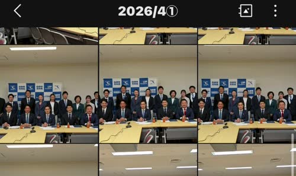
会合の最後はみなさんと記念撮影📸 同じ志を持つ仲間との時間は何よりの財産です。明日からも頑張ります！ #自民党 #仲間 #政治活動
本日の会合、最後は出席者全員での記念撮影で締めくくりとなりました。 地域も世代も様々な仲間が一堂に会し、それぞれの想いや経験を持ち寄って語り合えること——これは政治家として何ものにも代えがたい貴重な時間です。 こうして同じ志を持つ仲間と共に歩めることへの感謝を胸に、これからも地域の発展と暮らしの向上に全力を尽くしてまいります。
集合写真でパチリ📷 同じ志を持つ仲間と。 この一枚が明日への力になります。 #集合写真 #仲間 #自民党 #政治家の日常 #ありがとう #絆 #地方議員 #チーム
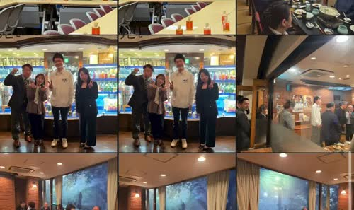
素敵な出会いに感謝🙌 地域で頑張る皆さんとお話しできて元気をいただきました✨ #地域交流 #感謝
本日は地域の皆さまとお会いする機会をいただきました。 日々それぞれの場所で頑張っていらっしゃる方々のお話を伺うと、地域を支えているのはやはり「人」だと改めて実感します。笑顔で迎えてくださった皆さまに心から感謝申し上げます。 こうした出会いの一つひとつが、私の活動の原動力です。これからも現場に足を運び、皆さまの声に耳を傾けてまいります。
笑顔の出会いに感謝✨ 地域で頑張る皆さんと、 ひとときの記念撮影。 #地域交流 #出会いに感謝 #笑顔 #ご縁 #地方議員 #人と人 #現場主義
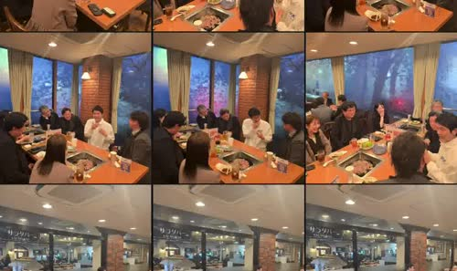
夜は懇親会へ🍶 美しい夜景を眺めながら、ざっくばらんに語り合う貴重な時間でした！ #懇親会 #夜景
本日の活動の締めくくりに、関係者の皆さまとの懇親会に参加させていただきました。 窓の外には美しい夜景が広がり、その景色を眺めながら、日中の会議では出てこなかった本音や、それぞれの近況、これからの夢まで——様々な話題に花が咲きました。 こうした場で交わされる何気ない言葉の中にこそ、本当に大切なヒントが隠れているものです。今日いただいたお話を、明日からの活動にしっかりと活かしてまいります。
夜景を眺めながら🌃 懇親会の席にて、 語らいのひととき。 美しい景色と、 温かい会話に感謝。 #懇親会 #夜景 #食事会 #ご縁 #語り合い #感謝
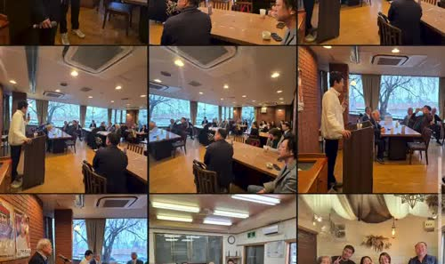
お昼の集まりも楽しい時間でした🍴 美味しい料理と良き仲間に感謝です！ #ランチ会 #会食
本日はレンガ壁のあたたかな雰囲気のレストランで、関係者の皆さまとの会食に参加させていただきました。 おいしい料理を囲みながら、政治の話だけでなく、それぞれの近況や趣味の話まで——リラックスした雰囲気の中で多くの会話が生まれました。こうしたインフォーマルな時間にこそ、信頼関係が育まれるのだと改めて感じます。 お招きいただいた皆さまに心より感謝申し上げます。
レンガ壁の素敵なお店で🍷 仲間との会食。 あたたかな照明、 美味しい料理、 楽しい会話。 #レストラン #会食 #ランチ #仲間 #おいしい #素敵なお店 #感謝
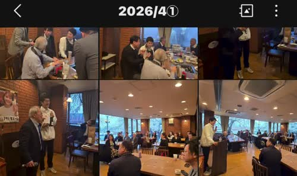
心温まる贈呈の場面に立ち会いました🎁 人と人とのつながりの素晴らしさを実感する一日です✨ #感謝
本日は心あたたまる贈呈の場面に立ち会わせていただきました。 日頃お世話になっている方々への感謝の気持ちを形にする——そんな素敵な瞬間に同席できたことを光栄に思います。贈る側も贈られる側も笑顔があふれ、その場の空気は何とも言えない温かさに包まれていました。 人と人とのつながりこそが、私たちの活動を支えてくれる大切な土台です。
心あたたまる場面🎁 感謝の気持ちが 形になる瞬間。 #感謝 #贈呈 #絆 #温かい時間 #ご縁 #ありがとう #人とのつながり
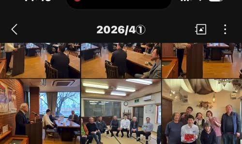
本日は研修会に出席。学びの時間は何度経験しても新鮮です📚 #学び #研修会
本日は研修会に参加させていただきました。会場には多くの方々が集まり、皆さん熱心に登壇者のお話に耳を傾けていらっしゃいました。 日々めまぐるしく変わる社会情勢の中で、私たち議員に求められる知識や視点も常にアップデートが必要です。今日の学びの中には、これからの活動に直結する大切な気付きが数多くありました。 学んだことを地域に持ち帰り、政策や日々の対応に確かに活かしてまいります。
学びの時間📚 研修会にて、 真剣な眼差しが並ぶ会場。 得た気付きを、 明日からの力に。 #研修会 #学び #勉強会 #成長 #日々精進 #地方議員
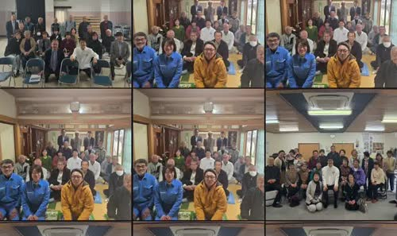
地域の集まりに参加📸 多くの皆さんと膝を突き合わせて語り合えた、貴重な一日でした！ #地域
本日は地域の集まりに参加させていただきました。和室の畳の上で、世代も立場も様々な皆さんと膝を突き合わせて語り合える——こういう距離感の近い場こそ、地域の本当の声を聴ける貴重な機会です。 青い作業着姿で集まってくださった方々をはじめ、ご参加いただいた皆さまには、現場で日々ご尽力いただいていることへ、心より敬意と感謝をお伝えしたいと思います。 頂戴したご意見を一つひとつ受け止め、必ずや形にしてまいります。
畳の広間で集合📷 世代も立場も超えて、 みんなで一枚。 #地域の集まり #集合写真 #和室 #みんなで #地方の力 #感謝
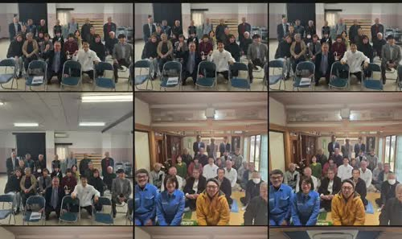
桜が満開🌸 地域の春は本当に美しい。皆さまも素敵な春をお過ごしください✨ #桜 #満開
今年も桜の季節がやってまいりました🌸 地域の桜の名所で、満開の桜の下で素敵な時間を過ごさせていただきました。毎年同じように咲く桜ですが、その度に「また一年、無事にこの季節を迎えられた」という感謝の気持ちが湧いてまいります。 忙しい日々の中でも、ふと立ち止まって季節の移ろいを感じる——そんな時間の大切さを改めて実感した一日でした。
🌸満開🌸 今年も会えた、 この景色。 立ち止まって、 深呼吸。 #桜 #満開 #お花見 #春 #さくら #日本の春 #cherryblossom
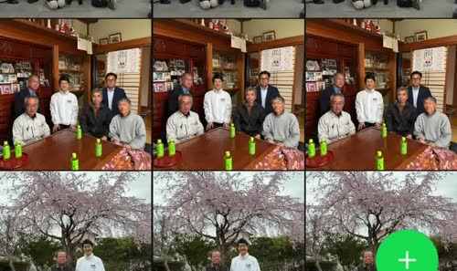
郡山にて、市議会議員の方とお会いしました🤝 地域を支える皆さんとの交流は何よりの学びです！ #郡山
本日は郡山市にお伺いし、市議会議員の村上様をはじめとする地域の皆さまと懇談の機会をいただきました。 地方議会の現場ではどのような課題と向き合い、どのような工夫をしながら住民の声を政策に反映させているのか——直接お話を伺うことで、多くの学びをいただきました。それぞれの地域には、それぞれの事情と知恵があります。 こうした横のつながりを大切にしながら、自分の地元でも活かせる視点を持ち帰ってまいります。
郡山市にて📍 市議会議員の方と 意見交換のひととき。 地域を超えた学び、 大切な時間でした。 #郡山市 #市議会議員 #意見交換 #地方議会 #学び
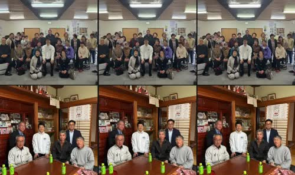
お昼はガッツリとカツカレー🍛 美味しすぎて笑顔が止まりません😄 午後も頑張ります！ #カツカレー
本日のお昼は、地元のお店でカツカレーをいただきました🍛 ボリューム満点のカツカレーを目の前にして、思わず笑顔がこぼれます。こうしてしっかりとお昼をいただけることに感謝しながら、午後の活動に向けてエネルギーをしっかりチャージさせていただきました。 地元の美味しいお店を巡るのも、地域を知るための大切な活動の一つだと思っています。
お昼はカツカレー🍛😋 ボリューム満点。 これで午後も頑張れる！ 地元の味、 最高です。 #カツカレー #ランチ #lunch #おいしい #地元グルメ
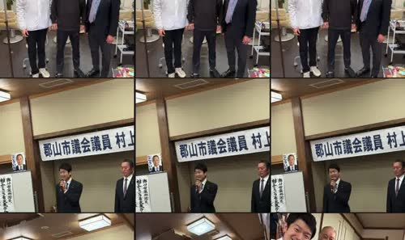
朝から作業会議💻 みんなでアイデアを出し合いながら、一つずつ形にしていきます！ #会議
本日は朝から作業会議に参加しました。ノートPCを広げ、それぞれが資料を確認しながらアイデアを出し合い、議論を深めていく——こうした地道な積み重ねこそが、政策を確かな形にしていく土台だと感じています。 華やかな場面の裏側には、必ずこのような地味で粘り強い作業があります。私自身もチームの一員として、しっかり手を動かし、頭を働かせて取り組んでまいります。
作業会議の朝💻 PC開いて、 意見を交わして、 一つずつ前へ。 #会議 #ミーティング #チームワーク #政策づくり #地道に
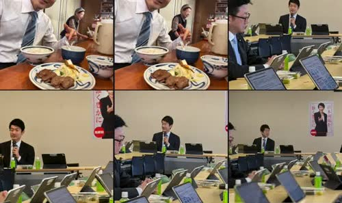
「強く豊かに」のメッセージを胸に、登壇させていただきました🎤 #講演 #強く豊かに
本日は「強く豊かに」をテーマとした会で、お話をさせていただく機会をいただきました。 「強く豊かに」——シンプルですが、私たちが目指すべき社会の姿を端的に表した、力強い言葉だと思います。一人ひとりが強くしなやかに生き、そして心も暮らしも豊かになる。そんな地域・国を実現するために、自分にできることを一つずつ積み重ねていきたい。そう改めて誓いを立てる時間となりました。
🎤 「強く豊かに」 シンプルだけど、 力強い言葉。 想いを言葉にのせて、 今日も伝えます。 #講演 #登壇 #強く豊かに #スピーチ
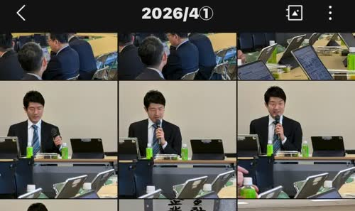
会議で発言の機会をいただきました🎤 若い世代の声をしっかり届けます！ #若手議員
本日の会議では、発言の機会をいただきました。 若い世代の視点から、これからの社会づくりに必要だと感じることを率直にお伝えさせていただきました。緊張もありましたが、こうした場で声を上げ続けることが、私たち若い世代に課せられた役割の一つだと考えています。 ベテランの先輩方からの貴重なアドバイスもいただきながら、これからも臆せず、しかし謙虚に、自分の言葉で発信を続けてまいります。
会議で発言🎤 若い世代の声を、 この場で届ける。 緊張、でも前へ。 #会議 #発言 #若手議員 #若者の声 #政治 #未来をつくる
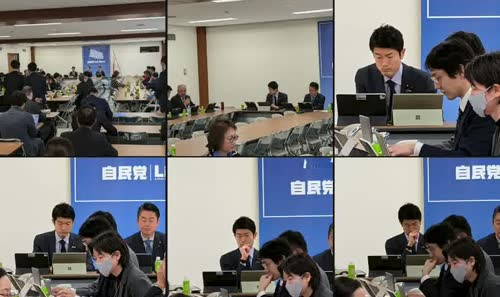
党の会議に出席。手元の資料と向き合いながら、しっかり議論に参加してきました📝 #自民党
本日は党の会議に出席いたしました。手元の資料に目を通しながら、議論の流れにしっかりと耳を傾け、必要な場面では自分の意見もお伝えしてまいりました。 派手さはありませんが、こうした地道な会議の積み重ねこそが、政策を磨き上げ、国民の皆さまの暮らしに資する結論を導き出していく土台になります。一つひとつの議論を大切にしながら、責任を持って取り組んでまいります。
党会議の一日📝 資料と向き合い、 議論を聴き、 意見を述べる。 地道な積み重ねを、 明日へ。 #自民党 #党会議 #政策議論 #政治家の日常